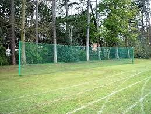
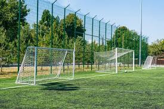

Living in Bellandur means high-rise apartments, open balconies, and beautiful views—but safety is essential. SSDJ Safety Nets provides premium balcony safety nets in Bellandur Bangalore to protect children, pets, and prevent accidental falls. We offer fast installation, strong materials, and affordable pricing across Bellandur, ORR, and nearby tech hub areas.

Bellandur is one of Bangalore’s fastest-growing residential and IT hub areas, with numerous gated communities, high-rise apartments, and tech parks along Outer Ring Road. With increasing building heights, ensuring balcony safety has become a priority for families. SSDJ Safety Nets specializes in installing high-quality balcony safety nets in Bellandur Bangalore, designed to provide maximum protection without blocking airflow or visibility. Our nets are ideal for families with children, pet owners, and anyone looking to prevent pigeon entry or accidental falls. We use premium UV-stabilized nylon nets that can withstand harsh weather conditions, ensuring long-lasting performance. Our expert team offers customized installations based on your balcony size and structure, delivering neat and secure fittings every time.

SSDJ Safety Nets is a trusted provider of balcony safety nets in Bellandur Bangalore, offering professional installation services for apartments, homes, and commercial spaces. With years of experience in Bangalore, we focus on safety, quality, and customer satisfaction. Along with balcony safety nets, we also provide pigeon safety nets, invisible grills, duct area safety nets, and complete safety net solutions in Bellandur and nearby areas. Our safety nets are strong, transparent, weather-resistant, and designed for long-lasting protection at affordable prices.
SSDJ Safety Nets provides professional balcony safety net installation services in Bellandur Bangalore, covering apartments, independent houses, and commercial spaces. We offer high-quality, durable, and weather-resistant safety nets designed to protect from birds, prevent accidental falls, and ensure a safe environment for children and pets. In addition to balcony safety nets, we also provide pigeon safety nets, invisible grills, duct area safety nets, and complete safety net solutions in Bellandur and nearby areas. Our expert team ensures quick installation, affordable pricing, and reliable service across all areas of Bangalore.
Looking for reliable balcony safety nets in Bellandur Bangalore? SSDJ Safety Nets provides professional safety net installation services for apartments, homes, and commercial buildings. We also offer pigeon safety nets, invisible grills, and complete safety solutions in Banashankari and nearby areas. Fill out the form today and our team will contact you shortly to provide a free site inspection and best price quote.
